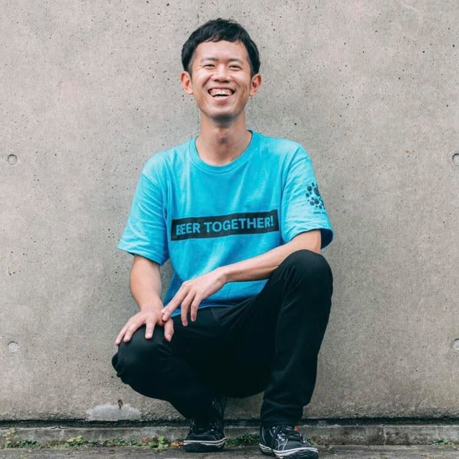

POOLO ゼミ 説明会 ／ 2026.09.01
旅で見つけた問いから、
学びの場を創る。
あなたのひとつの問いを、誰かが「参加したい」と思う小さな学びの場にする、3ヶ月・全7回。
Who I am

コオドリ代表 ／ TABIPPO取締役 ／ POOLO学長
恩田 倫孝みっちー
Michinori Onda
87年生まれ、新潟市青山出身。慶応大学理工卒。商社勤務のあと1年間の世界一周を経て、2014年からTABIPPOへ。場づくりとコミュニティデザインを得意としています。2019年にPOOLOを設立、2024年に旅と教育の専門会社コオドリを創業。
愛読書は小林秀雄と村上春樹。好きな旅はスペイン巡礼とバーニングマン。共同生活が好きで、10年近くシェアハウスを続けています。渡航国数は51。
#コミュニティ#学び#旅
#豊かさ#自己表現#新潟
Hello
まず、声を出すところから。
01お名前ニックネームでも大丈夫です
02いま、どこからお住まいでも、旅先でも
03直近の旅で、
いちばんよかった瞬間短くて構いません。景色でも、人でも、食べ物でも
お一人30秒ほどで。気になったことは、途中でいつでも聞いてください。
Where you are ／ 01
今日ここにいる理由に、
いちばん近いのはどれですか。
A受け取る側は十分やってきた。次は創る側に回ってみたい
Bつくりたいものはある。でも形にできていない
Cまだ何も決まっていない。とりあえず話を聞きに来た
Where you are ／ 02
これまでに、
自分で場をひらいた経験は。
A何度かある
B一度だけある
Cない。参加する側だけだった
Today
今日は、
説明を聞く会ではありません。
90分後、あなたが持って帰るのは
「つい語ってしまう話」ひとつです。
ゼミの中身は、ページを読めば分かります。ページを読んでも分からないのは、「自分にそれができるのか」という一点だと思うので。
Why now
旅大学から、11年。
700回のイベント運営・企画
10,000人を超える来場者
7年続いたPOOLO
送り出す側に、ずっと立ってきました。そこで、見えてしまったことがあります。
What I saw
いちばん学んで、
いちばん変わっていたのは、
いつも「創った人」でした。
参加者としてどれだけ真剣に受け取っても、企画した人の変化には届かない。11年間、ずっとそうでした。
And
受け取る側は、いつか終わる。
創る側には、終わりがない。
POOLOが終わると、あんなに濃かった時間が急になくなります。そして「またどこかの講座に申し込む」を繰り返すことになる。
受け取る側を十分にやってきた人が、次に行く場所。それが、このゼミです。
誤解のないように
壮大な起業の話でも、
副業で稼ぐ話でもありません。
つくるのは、参加費1〜3万円・定員6〜10名の、
小さくてあたたかい場。
人生を賭けなくていい。会社を辞めなくていい。ただ、自分の問いを囲む場をひとつ持つ。それだけです。
Goal ／ 3ヶ月後
さっき手を挙げてもらった3つが、
12月22日にはこうなります。
A ／ 創る側に回りたい
講座もコミュニティも十分やってきた。学びは多いのに、終わるたび手元に何も残らない。
3ヶ月後
自分の名前で募集ページを出し、初回の開催日が埋まっている。ありがとうを、言う側から言われる側へ。
B ／ 形にできていない
構想は2年前からある。でも人に説明できる形になっていないまま、ずっと下書き。
3ヶ月後
7つの問いが全部埋まった企画書が1枚。値段も定員も日程も決まり、同期が第1号の参加者になっている。
C ／ まだ何も決まっていない
何をやりたいのか自分でも分からない。「語れることなんて、自分にあるのか」と思っている。
3ヶ月後
旅から掘り当てた問いが1行になっている。人に話すと前のめりで聞かれる。次にやることが決まっている。
どこから入っても、修了時に手元にあるものは同じです。①埋まった企画キャンバス1枚 ②初回の開催日 ③同期15名。
Work 01 ／ 6分
まず、手を動かします。
旅の中で「つい人に話してしまった」
「心が動いた」瞬間を、10個。
・いい話を書こうとしないでください。「人に言うと引かれるかも」くらいが原石です
・まとめなくていい。単語でも、途中で切れていても大丈夫
・10個埋まらなくても大丈夫。7個でも8個でも
Work 01 ／ 2分
この中から、1つだけ。
「これについてなら、黙っていられない」
そう思えるものに、○をひとつ。
「詳しい」ではなく「黙っていられない」で選んでください。知識の量ではなく、体温の高さです。うまく説明できないものほど、掘る価値があります。
Examples
その1つが、こうなります。
鹿児島の“辺境”から、
日本を見る
全4回 ／ 25,000円 ／ 定員8名
地域に通い続けた人の、土地から社会を読む場
北海道、食の裏側
― 開拓史と生産者から読み解く
全5回 ／ 30,000円 ／ 定員10名
食べ歩きが好きだった人の、産業と歴史をたどる場
40歳の地図
― 旅の問いで、これからを言葉にする
全4回 ／ 30,000円 ／ 定員6名
人生の節目に旅に出た人の、同世代と考える場
ジャンルはばらばらです。共通しているのは、「旅で見つけた問いが根っこにある」という一点だけ。テーマが被っても大丈夫です。原体験が違えば、まったく別の場になります。
Work 02 ／ 3分
では、あなたの1行も
この形にしてみてください。
から学ぶ、
左にあなたの原体験、右に相手が受け取るもの。うまい言葉にしなくて大丈夫です。今日は仮で構いません。むしろ、後で必ず変わります。
書けたら、シートの③に入れて「書いた内容を送る」まで押してください。
Reveal
じつは今のが、
ゼミの第1回と、第2回の入り口です。
今日は23分でした。それでも、原石と仮テーマが1つずつ見つかりましたよね。ゼミでは、これを2時間かけて、フィードバックをもらいながらやります。
Fig. 企画キャンバス
持ち帰るのは、この1枚。
01なぜ私が旅のどの経験が、この問いの根っこにあるのか
02誰のために来てほしい一人を、具体的に思い浮かべる
03一言でいうと参加者が友人に説明できる、ひとつの文に
04どんな体験を何回で、何をして、終わったときどうなっているか
05いくらで価値と、続けられる値段のつり合い
06どう伝えるかどこで、どんな言葉で届けるか
07いつ創るか初回の開催日を、カレンダーに入れる
—今日やったのは、①だけ。残り6つを、3ヶ月で1つずつ埋めていきます。
3ヶ月で手に入るのは、
1つの企画ではなく、
企画を作る「型」のほうです。
埋め終わったキャンバスは手元に残ります。だから2本目、3本目も自分で作れるようになる。
Program ／ 全7回
問いが、ひらける企画になるまで。
1掘る旅の棚卸し
2学びにするたった一人へ
3設計するゲスト講義
4試作するミニ開催・山場
5磨く1対1・別日程
6集めるゲスト講義
7創る開業式
この7つの動詞だけ、覚えて帰ってください。
Guests
自己流でつまずくのは、
「場の設計」と「人の集め方」の2つだけ。
第3回｜学びの場を、設計する
アフロマンス
株式会社 Afro&Co. CCO
体験をつくるクリエイター／イベントプロデューサー。「脳汁銭湯」「SAKURA CHILL BAR by 佐賀」「喰種レストラン」などを全国で企画・プロデュース。
第6回｜自分の場に、人を集める
ルイス前田
株式会社ノマドニア 代表取締役
120ヶ国を旅する海外ノマド。TABIPPO創業メンバーで元編集長。『ノマドニア』『スラッシュワーカーズ』を主宰。著書『海外ノマド入門』。
Design
「いつかやる」で終われない、
そういう設計にしています。
- 第4回・ミニ開催 自分のゼミの1コマを、受講生どうしで実際に開く。「3万円の価値があるか」を5つの軸で相互に審査する
- 第5回・1対1 試作のフィードバックを持って、メンターと個別に30〜45分。つまずきを、個別にほどく
- 第7回・開業式 同期どうしが互いの第1号参加者に。初回開催日を、その場でカレンダーに入れて送り出す
Schedule
10/13〜12/22、隔週火曜20:00–22:00。
| 01 | 10月13日（火） | 旅の棚卸しから、問いを掘る | |
| 02 | 10月27日（火） | たった一人に向けて、問いを"学び"にする | |
| 03 | 11月10日（火） | 学びの場を、設計する | ゲスト |
| 04 | 11月24日（火） | ミニ開催で、試作する | 山場 |
| 05 | 11/25–12/6 | 1対1で、企画を磨く（30–45分） | 別日程 |
| 06 | 12月8日（火） | 自分の場に、人を集める | ゲスト |
| 07 | 12月22日（火） | ひらいて、送り出す（開業式） | |
すべてZoom。欠席回は録画とワークシートを共有します（第4回だけは、できるだけご参加ください）。
Fee
お金の話を、先にします。
77,000円（税込）／ 全7回分
正直、安くはないと思います。含まれているのは、全7回・14時間の講義、ゲスト2名、個別メンタリング1対1、全7回分のワークシート、同期15名からのフィードバック、そして第7回での相互申込。1回あたり11,000円です。
Return
回収の話も、正面から。
- 1本目の想定規模
- 2.5万円×定員8名の場合
- 1本目の売上
- 20万円参加費77,000円は回収圏
- 2本目以降
- 型が残るキャンバスは手元に残り、再現できる
ただし、これは埋まればの話です。1本目から満席になる保証はありません。だから第6回で集客を扱い、第7回で同期が第1号参加者になる設計にしています。
それでもいちばん大きいのは、
お金ではありません。
「自分の場を持っている人になる」ことです。
それは、次の10年ずっと効きます。
For / Not for
向いている人と、
今回は向かないかもしれない人。
こんな方へ
- 旅の話をすると、つい自分が一番前のめりになってしまう方
- 受け取る側を十分やってきた。次は創る側に回ってみたい方
- 「旅を仕事に」を、小さな一歩から始めたい方
- テーマはまだ曖昧でいい。とにかく形にしたい方
今回は、向かないかもしれません
- 集客ノウハウ・講義テクニックだけを受け取りたい方
- 隔週2時間＋宿題の時間が取れない方
- 自分の企画を人に見せ、フィードバックを受けることに抵抗がある方
- 収益化のスピードを最優先したい方（1本目は数万円規模です）
Homework
今日の宿題。
その話を、
誰か一人に話してみてください。
今日○をつけた話を、今週中に誰か一人に。友人でも、家族でも構いません。話してみて、相手が前のめりになったら、それは本物です。
そして何より——話しているとき、自分がどれだけ喋り続けたかを覚えておいてください。
Application
定員15名・10月13日開講。
- 申込締切 2026年9月27日（日）23:59 ／ 定員に達し次第、締切前でも終了
- 申込方法 POOLO公式LINEから、所要5分ほど
- 迷っている方へ 個別相談の時間を取れます。決めきる前にどうぞ
今日みなさんが書いたあの1行が、来年の春には誰かが申し込む場になっているかもしれません。そういう3ヶ月です。
直したい文字をクリックして、そのまま打ち替えてください。
改行は Shift + Enter。入力はこの端末に自動保存されます。
編集中はスライドが送られません。送るときは編集モードを切ってください。
直し終えたら「変更点をコピー」を押して、その中身をClaudeに貼れば公開版に反映します。